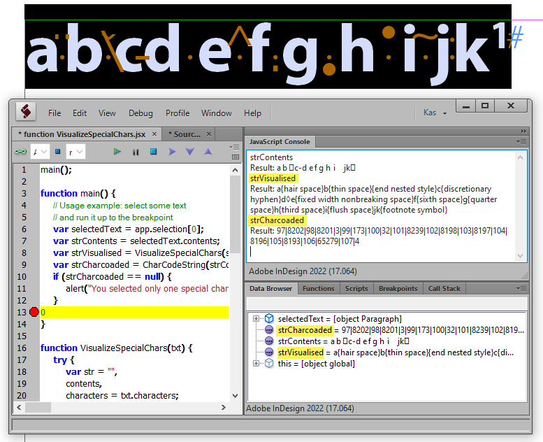
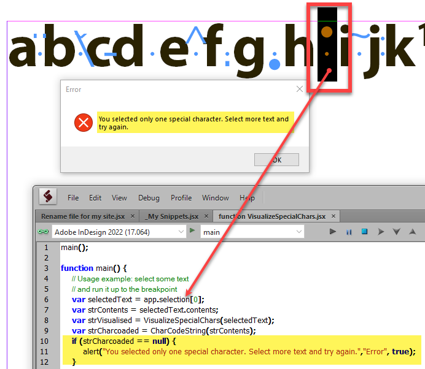
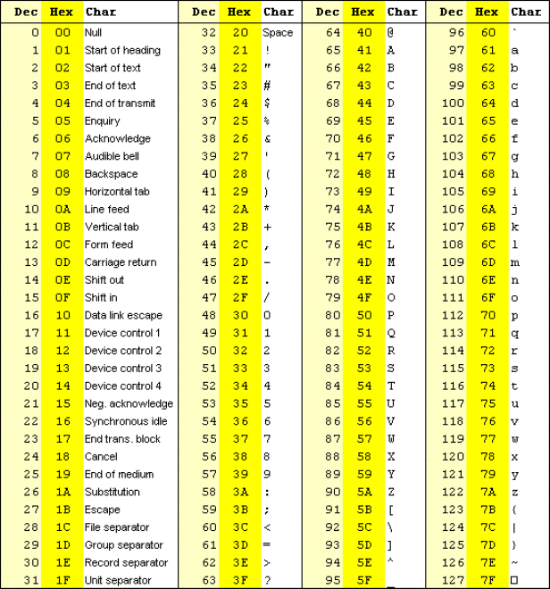

Visualize special characters
Whenever I am debugging a script that interacts with a text object, it takes time for me to figure out what the special characters are because they are invisible in the ESTK’s console or data browser.
To speed up the process, I wrote a couple of functions:
VisualizeSpecialChars — requires a text object as the argument — makes visible:
- (regular) spaces marking them with the lozenge (diamond) character
- special characters (SpecialCharacters in the Enum Suite) verbalizing them inside a pair of curly brackets.
CharCodeString — requires a plain text string as the argument (use the contents property of a text object, not the text object itself) — returns the Unicode values of all the characters in the string divided by the pipe character. For example, it may come in handy to detect, say, text anchors that have the Unicode value of 65279. (The above-mentioned function can’t do that.)
As you can see on the screenshot, the original string — the strContents variable — is less than informative.

Note: you can’t send to the CharCodeString function only one special character as the argument. In this case, it returns null.

Click here to download them.
In addition, here’s a table of decimal and Unicode values for reference.
